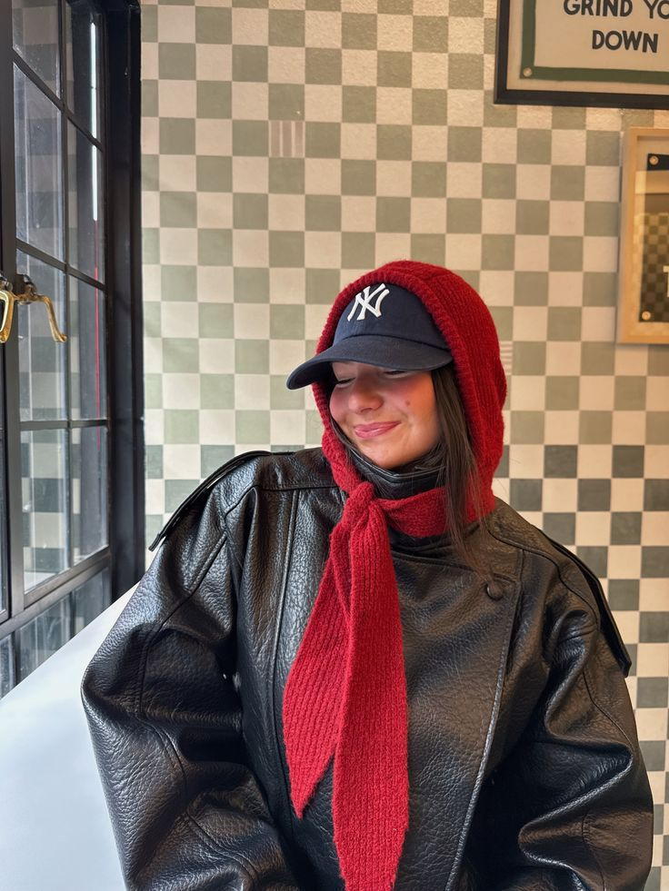
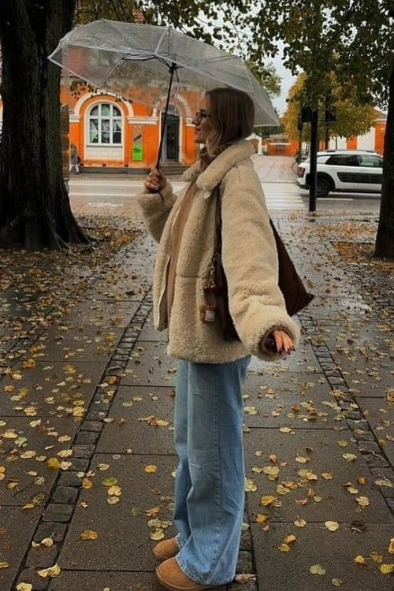

Días cálidos
Outfits livianos, frescos y cómodos para temperaturas elevadas.
Sugerencias de looks adaptados a distintas condiciones climáticas.
Outfits livianos, frescos y cómodos para temperaturas elevadas.

Combinaciones con abrigo y superposición de prendas.

Propuestas funcionales pensadas para jornadas húmedas o inestables.
Looks equilibrados para días de temperatura intermedia.
Una combinación equilibrada para adaptarse a cambios de temperatura durante el día, manteniendo comodidad y estilo sin necesidad de cambios constantes.
Ver inspiraciónElegí telas livianas y colores claros para mantener la frescura durante toda la jornada.
Incorporá capas y prendas térmicas para lograr abrigo sin perder estilo.
Priorizá materiales resistentes al agua y calzado adecuado para mayor comodidad.
Vestirse según el clima no significa renunciar al estilo. Adaptar las prendas a cada temperatura permite crear combinaciones prácticas y funcionales para cualquier momento del día.